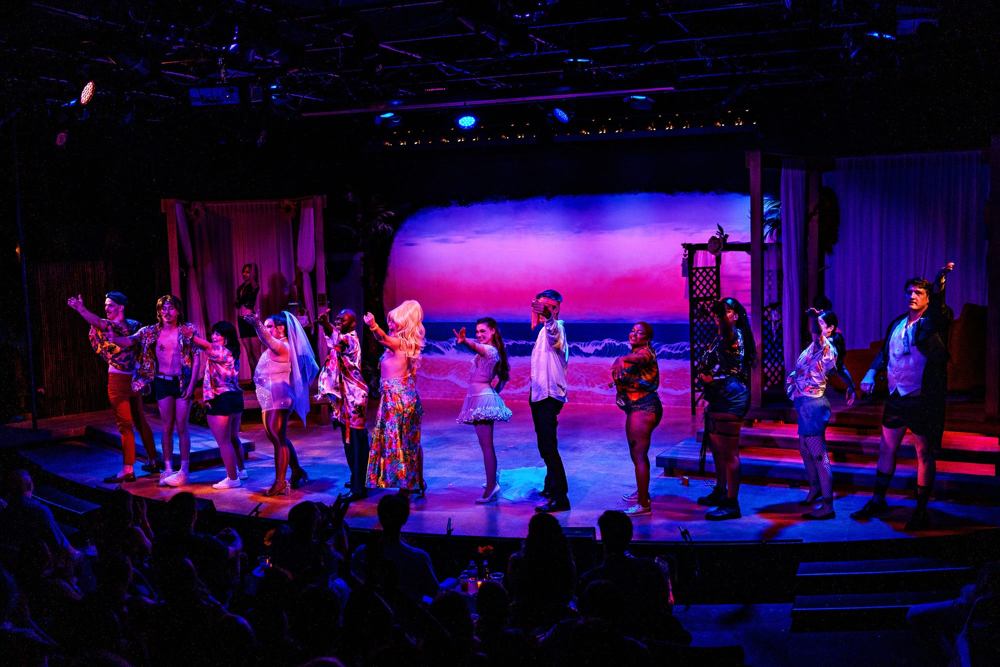
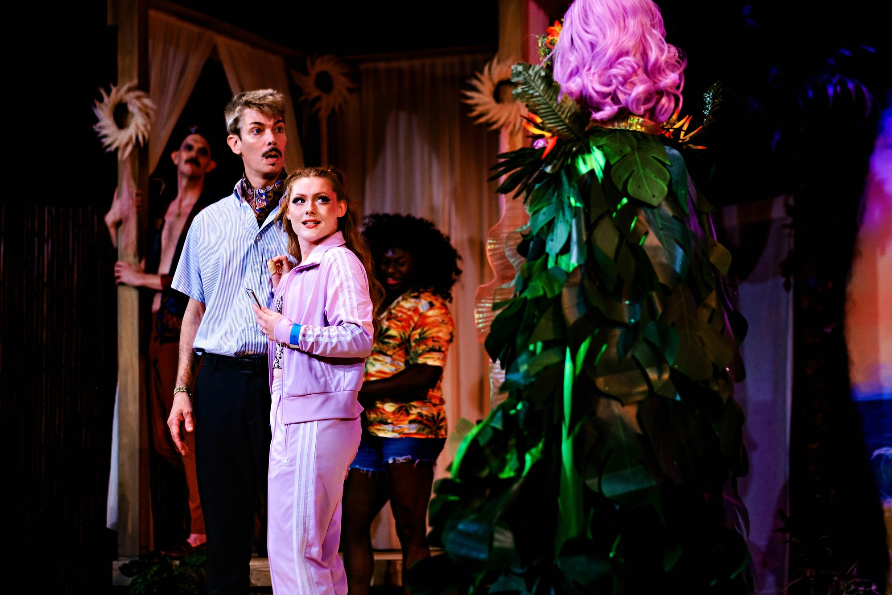
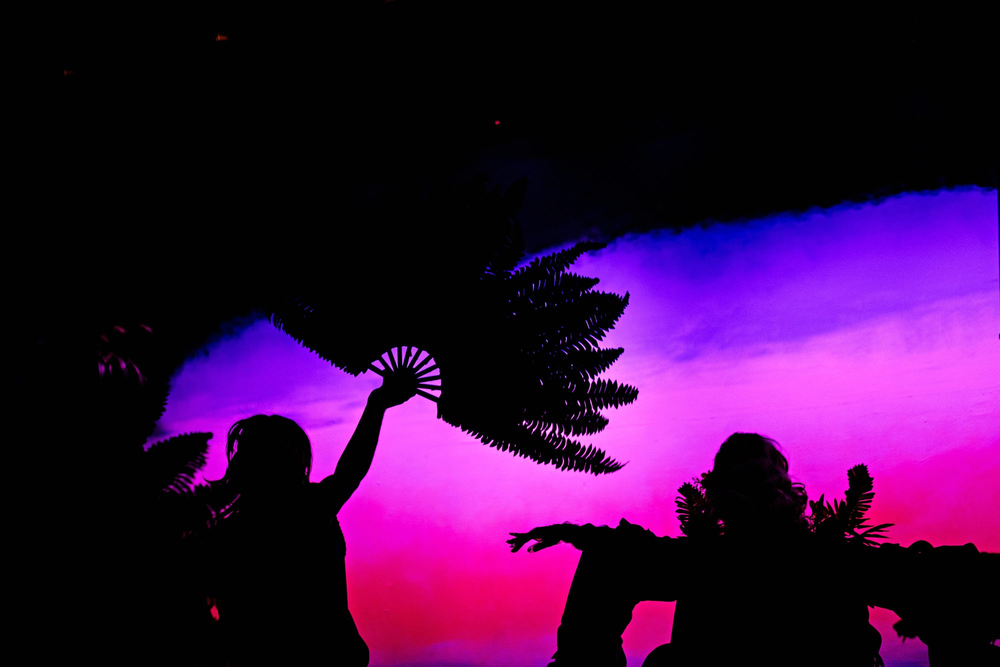

Immersive & Experiential / Case Study
Murder on Vavianna Island
An original island-noir murder mystery, combining improv, exploration, movement, and of course, cocktails.
01 — Overview
Most mysteries are watched. We wanted one you could wander into — an original island, an original cast of characters, and a murder worth investigating.
Vavianna Vardot is a wholly original character, created and regularly portrayed in seasonal shows by Dad’s Garage ensemble member Amber Nash — whom you may also know from FX’s Archer. (Oops, guess I dropped that name!) Written by Megan Leahy and directed by Amanda Lee Williams, the world, the backstories, and the motives were created from scratch. As Director of Immersive Design, I helped shape the guest journey through the spaces — how the island’s story showed up in the rooms, ideas for character interactions and physical clues, and how guests found their way through the world.

02 — What I owned
Immersive design, from lore to run-of-show
- 1The world in the room. Translating the island’s story into things guests can see, touch, and snoop through — environments, props, and the details that reward curiosity.
- 2The guest journey. Mapping the experience from arrival to accusation: Building the immersion from the first step onto the property through the farewell.
- 3Clue & interaction design. Discoverable storytelling — artifacts that feel found, not handed over, and surprises that rewarded the curious without putting the meek on the spot.
- 4Production coordination. Props, locations, cocktail logistics, interactive elements, and a run-of-show that survived contact with a live audience. Original shows come with original problems; we solved them nightly, together. Hooboy. 600 cocktails per night is a lot!

03 — How it plays
The audience is the detective
Guests mingle with the cast, interrogate suspects, trade theories, and piece the night together themselves. A participatory experience lives or dies on three things: what people notice, what they understand they’re allowed to do, and how their choices visibly connect to the story. Designing those three loops — for a room full of strangers at different energy levels — was the whole craft.


04 — Reflection
This is UX with no screen: the interface is the room, the navigation is curiosity, and the error state is a guest who’s confused or having a bad time. Designing for that sharpened my immersive and human-factors instincts — and honestly, it’s one of the most rewarding experiences I’ve had.